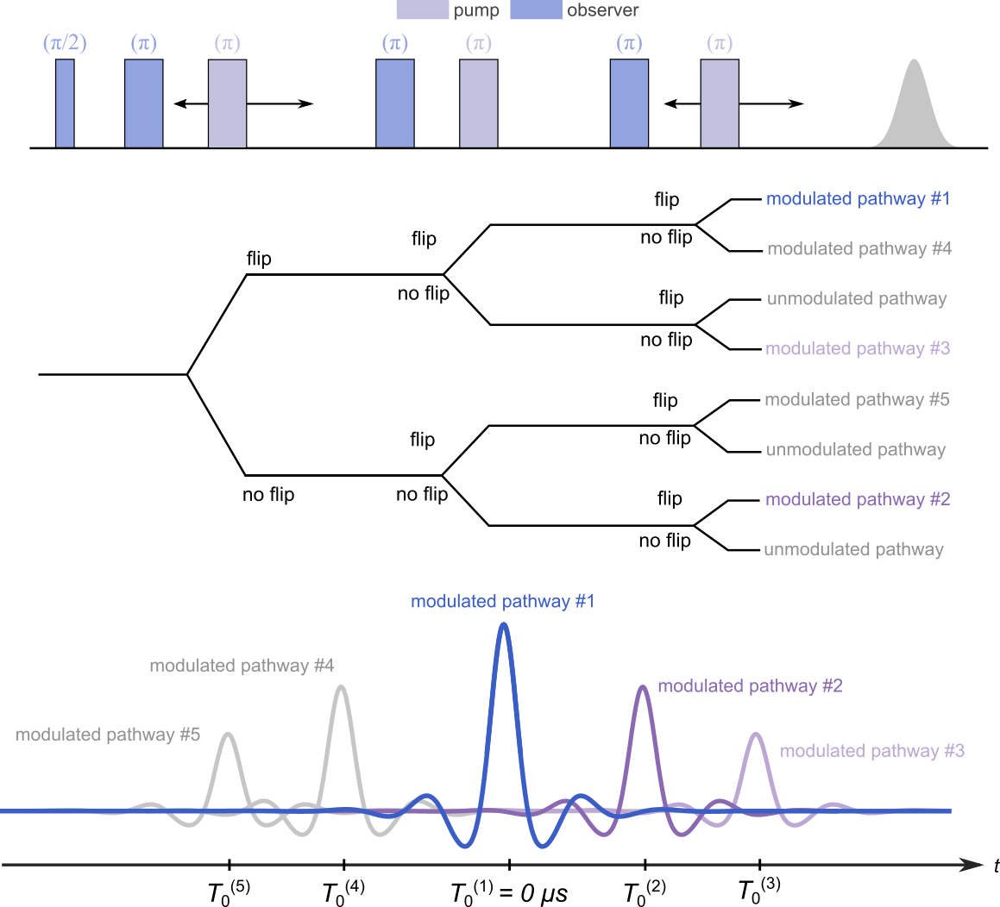

ex_7pdeer¶
-
deerlab.ex_models.ex_7pdeer(param=[])[source]¶ - Parameters
- paramarray_like
List of model parameter values.
- Returns
- infodict
Dictionary containing the built-in information of the model:
info['Parameters']- string list of parameter namesinfo['Units']- string list of metric units of parametersinfo['Start']- list of values used as start values during optimizationinfo['Lower']- list of values used as lower bounds during optimizationinfo['Upper']- list of values used as upper bounds during optimization
- pathwaysndarray
Dipolar pathways of the experiment
Model¶
In order to reduce the parameter space, only the dipolar pathways refocusing at positive times (pathways #1-3) are considered in this model:
where  ,
,  , and
, and  are the refocusing times of the three modulated dipolar pathways at positive evolution times.
are the refocusing times of the three modulated dipolar pathways at positive evolution times.
Variable |
Symbol |
Start Values |
Lower |
Upper |
Description |
|---|---|---|---|---|---|
|
|
0.4 |
0 |
1 |
Unmodulated pathways, amplitude |
|
|
0.4 |
0 |
1 |
1st modulated pathway, amplitude |
|
0.2 |
0 |
1 |
2nd modulated pathway, amplitude |
|
|
0.2 |
0 |
1 |
3rd modulated pathway, amplitude |
|
|
|
1.5 |
0 |
20 |
2nd modulated pathway, refocusing time (μs) |
|
|
3.5 |
0 |
20 |
3rd modulated pathway, refocusing time (μs) |


{kind=link}
Example of a simulated signal using start values: